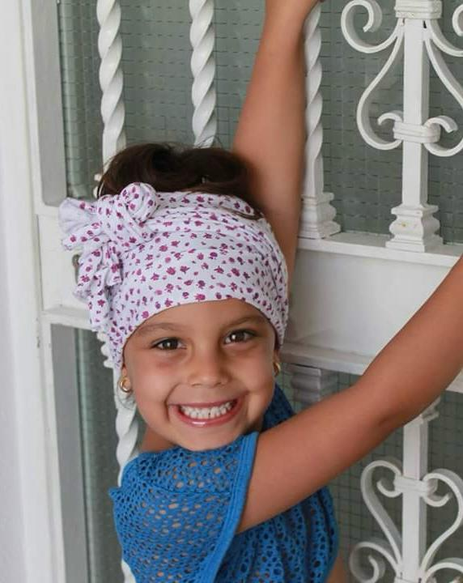
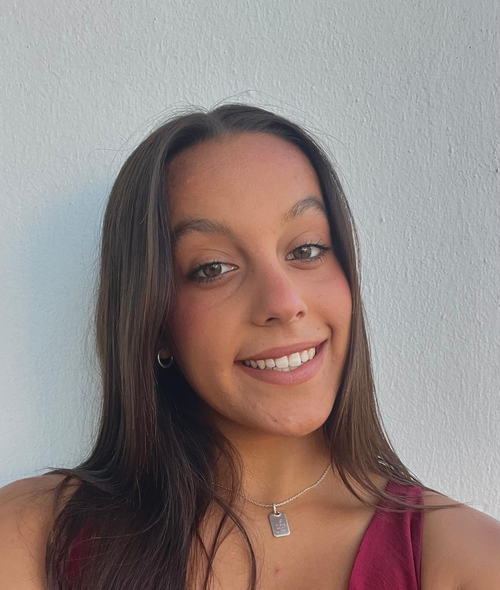
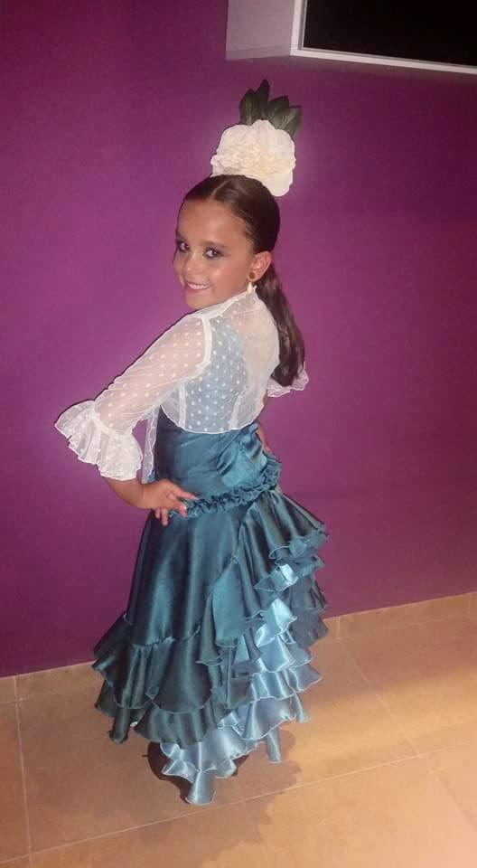
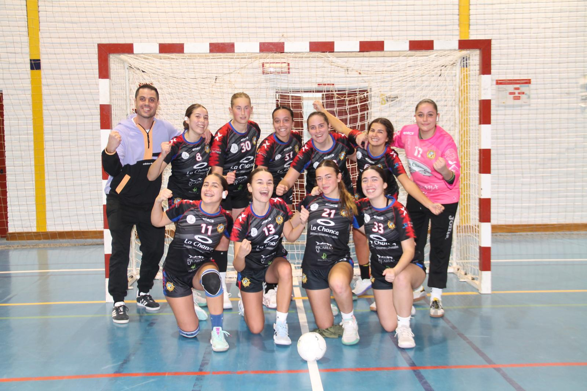
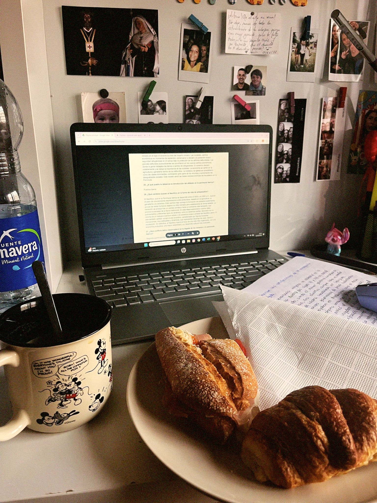
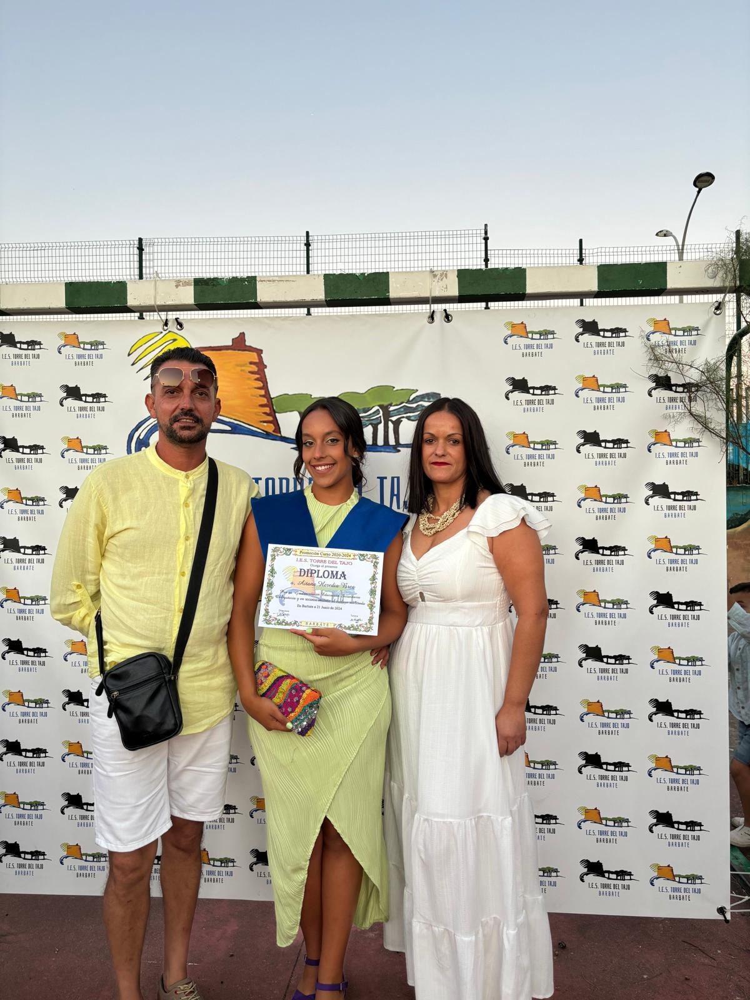
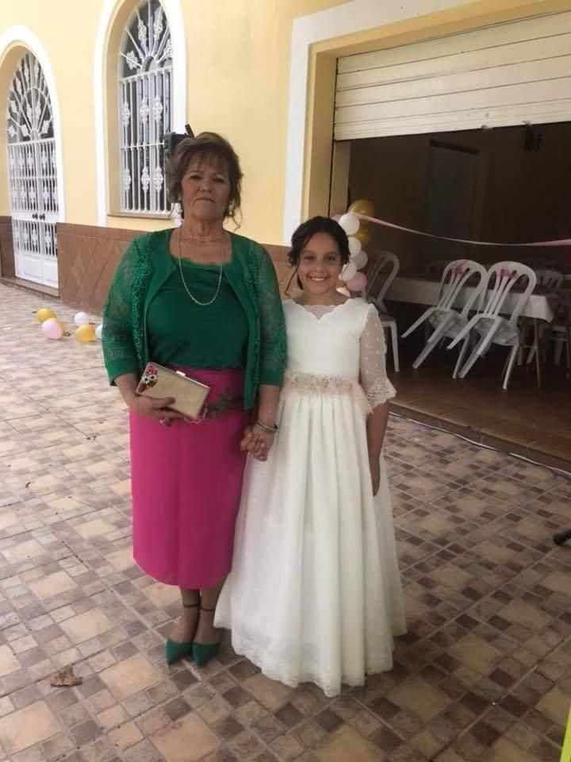
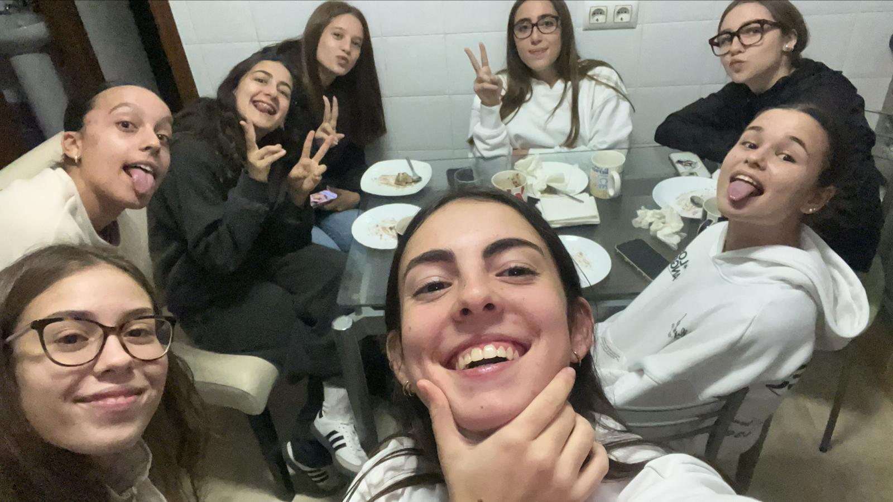
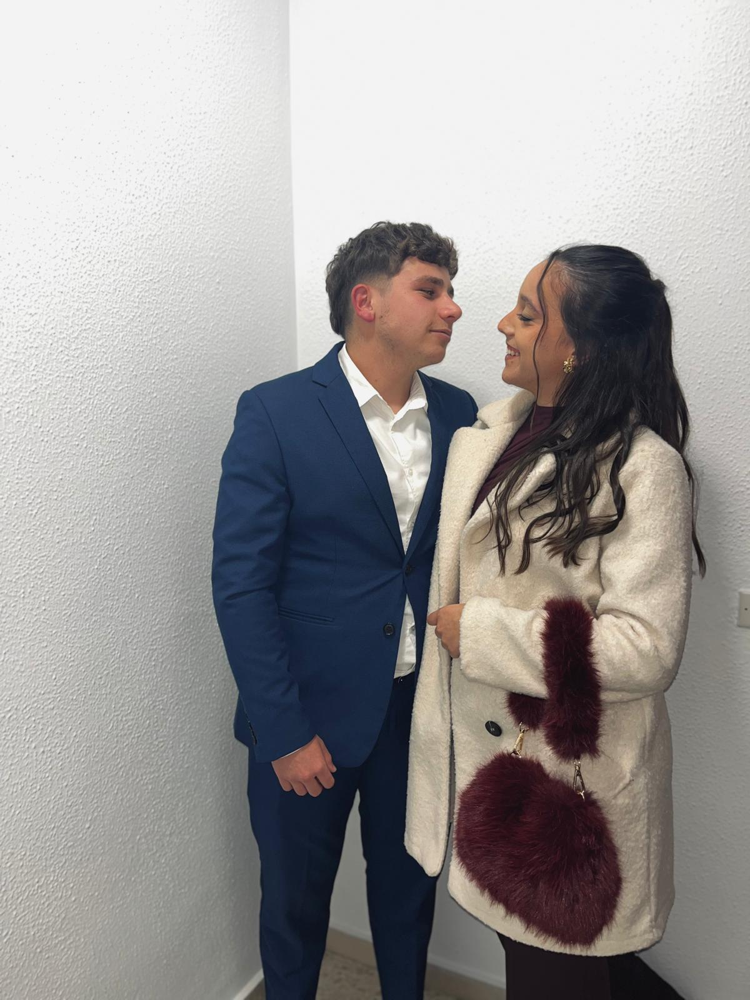

“Cada experiencia me ha formado, cada elección me define.”

➜
De dónde vengo · Quién soy · A dónde voy
En este podcast no cuento mi vida como una simple historia, sino que la cuestiono. Me planteo si soy realmente quien quiero ser o si soy el resultado de las circunstancias.
A lo largo del podcast intento responder a través de diferentes partes de mi vida: los estudios, el deporte, el flamenco, el amor y el futuro.
Después de todo, puede que aún no tenga una respuesta clara sobre quién soy, pero sí tengo algo importante: la capacidad de cuestionarme.
Este podcast representa ese proceso de búsqueda, donde entenderme no es encontrar una respuesta definitiva, sino seguir haciéndome preguntas.
El flamenco ha sido una parte esencial de mi vida desde que tenía apenas tres años. Desde muy pequeña, el baile se convirtió en una forma de expresión que iba más allá del movimiento: era una manera de comunicar emociones, sentimientos y de sentirme libre.
A lo largo de los años, el esfuerzo, la constancia y la disciplina que exige este arte formaron parte de mi rutina diaria. Gracias a ello, no solo crecí como bailaora, sino también como persona. Los trofeos que he conseguido no representan únicamente premios, sino etapas de superación, sacrificio y pasión por el flamenco.
Sin embargo, mi trayectoria se vio interrumpida por una lesión en la rodilla que me impidió continuar bailando como lo hacía antes. Aceptar esta situación no fue fácil, ya que el flamenco no era solo una afición, sino una parte fundamental de mi identidad.
A pesar de ello, el vínculo con el baile nunca desapareció. Aunque el dolor me impone límites, a veces me pongo los tacones y bailo en casa, aunque sea durante unos minutos. Esos pequeños momentos me permiten reconectar con lo que soy y con lo que el flamenco sigue significando para mí.
Me siento identificada con esta idea, ya que, aunque mi cuerpo esté marcado por el dolor, mi espíritu sigue unido al baile. El flamenco continúa siendo una fuente de fuerza interior y una forma de resistencia frente a las dificultades.

El balonmano ha significado y significa para mí, no solo como un deporte, sino como una experiencia que ha marcado mi forma de pensar, de sentir y de enfrentar las dificultades.
Para mí, el balonmano siempre ha sido mucho más que entrenar o jugar partidos. Ha sido compañerismo, esfuerzo y unión con mis amigas. En la pista aprendí lo que significa confiar en los demás, apoyarnos como equipo y luchar juntas por un mismo objetivo. El balonmano me hacía sentir fuerte, activa y parte de algo importante.
Todo cambió el día que me lesioné la rodilla en un partido en Málaga. Recuerdo que no tenía muchas ganas de ir, como si algo dentro de mí me avisara, pero aun así fui. En ese partido me rompí el menisco y el ligamento cruzado, y de un momento a otro tuve que parar por completo.
A partir de ahí comenzó una etapa muy dura. Por mi edad, solo pudieron operarme el menisco, así que tuve que convivir con el cruzado roto. El balonmano desapareció de mi rutina y con él una parte muy importante de mi identidad.
Hoy sigo jugando con rodillera y con dolor en algunos momentos, pero lo afronto de otra manera. He cambiado, he madurado y he aprendido a valorar el balonmano desde otro lugar.

Durante este primer trimestre de segundo de Bachillerato, mi experiencia académica ha sido más complicada de lo que esperaba. A pesar de haber mantenido la constancia y la asistencia regular, considero que no he sabido estudiar de forma eficaz ni organizarme correctamente ante la exigencia del curso.
Como consecuencia, me han quedado cinco asignaturas, lo cual ha supuesto un golpe importante a nivel académico y personal.
Sin embargo, creo que es fundamental analizar esta situación con espíritu crítico y asumir la responsabilidad de mis resultados. No ha sido una falta de interés ni de compromiso, sino una metodología de estudio poco adecuada para el nivel y la carga de trabajo que exige segundo de Bachillerato.
Considero que este momento de dificultad forma parte del proceso de madurez académica. A pesar de los resultados obtenidos, no voy a perder la motivación ni la voluntad de mejorar, ya que el curso es largo y aún existen oportunidades para cambiar la situación.
Este trimestre ha sido un punto de inflexión y un aprendizaje. Por ello, voy a replantear mi forma de estudiar, mejorar mi planificación del tiempo y buscar técnicas de estudio más eficaces.
Así mismo, tengo la intención de acudir a la orientadora del centro para recibir asesoramiento y apoyo que me ayuden a afrontar el resto del curso con mayor seguridad.

Desde que era pequeña, el amor ha sido una parte esencial de mi vida. Con el tiempo he entendido que no es solo un sentimiento, sino una fuerza que nos impulsa y nos da razones para seguir adelante. Muchos filósofos han reflexionado sobre su importancia, pero es en la experiencia personal donde realmente se comprende su verdadero significado.
Mi historia comienza en el entorno familiar. Mi familia siempre me ha dado todo lo que he necesitado, tanto en lo material como en educación y valores. Aunque a veces discutamos, porque es algo normal en cualquier familia, eso no cambia lo fundamentales que son en mi vida.
He aprendido que querer a alguien no significa no tener diferencias, sino saber que, a pesar de ellas, esas personas forman parte de ti.

Sin embargo, hubo un momento que marcó profundamente mi infancia: la pérdida de mi abuela. Ella fue un gran apoyo para mí y su ausencia dejó un vacío difícil de explicar.
Perderla me enseñó que el amor no desaparece cuando una persona se va, sino que permanece en el recuerdo y en todo lo que nos ha enseñado. Esa experiencia me hizo comprender el valor del tiempo compartido y la importancia de expresar lo que sentimos.
Mi abuela representó para mí esa forma sincera y profunda de amar. Siempre ha sido y será una de las personas más importantes de mi vida. Espero que esté orgullosa de la persona en la que me estoy convirtiendo y que, allí donde esté, me siga acompañando y guiando con su recuerdo.

Con el paso de los años, también mis amigas y amigos han ocupado un lugar muy importante.
Con ellos comparto risas, momentos felices y experiencias que hacen la vida más ligera. He aprendido que es fundamental rodearse de personas que sumen, que aporten cosas positivas y que nos ayuden a crecer.

No obstante, el amor que más ha transformado mi forma de ver la vida es el amor de pareja.
En mi caso, mi pareja representa esa fuerza. Él no es solo alguien importante; es la persona que me da ganas de vivir, que me motiva a luchar por mis metas y que me recuerda cada día lo que valgo.
Con él he aprendido que amar es construir juntos, compartir sueños y sostenerse en los momentos difíciles. Su presencia me da tranquilidad y confianza. Cuando tengo dudas, me anima; cuando tengo miedo, me da fuerza; cuando soy feliz, comparte esa felicidad conmigo.
Es una parte esencial de mi estabilidad y de mi alegría. No se trata de depender, sino de elegir cada día caminar a su lado. Por eso puedo decir que es todo para mí, porque su amor da sentido y dirección a mi vida.

Cuando pienso en mi futuro, no lo veo como algo lejano o imposible. Lo veo como una historia que estoy empezando a escribir ahora. Cada decisión que tomo hoy forma parte de la persona que quiero llegar a ser mañana.
Desde hace tiempo tengo claro que me gustaría estudiar Pedagogía o Psicología. Siempre me ha gustado ayudar a las personas, escuchar sus problemas e intentar comprender lo que sienten. No lo hago por obligación, sino porque realmente me nace.
Además, me encanta estar con niños. Creo que en la infancia se construyen muchas de las cosas que marcan nuestra vida, y poder acompañar a alguien en esa etapa sería algo muy importante para mí.
También tengo metas más personales, como sacarme el carnet de conducir. Puede parecer algo simple, pero para mí significa independencia, crecer y empezar a valerme por mí misma. Son pequeños pasos que me acercan a la vida adulta que quiero tener.
En el amor, deseo que mi relación siga creciendo de forma estable. Me gustaría formar una familia en el futuro, tener una casa, un trabajo fijo y una vida tranquila. No busco algo perfecto, sino algo seguro, basado en el respeto y el cariño. Yo quiero un amor que se elija todos los días, que sea fuerte y constante.
Pero mi futuro no es solo estabilidad. También quiero viajar mucho, conocer otros países, otras culturas y otras formas de ver el mundo. Viajar es aprender. Es crecer. Es salir de lo conocido.
Por eso quiero que mis circunstancias estén llenas de experiencias que me hagan evolucionar.
Cuando pienso en mi vida, me doy cuenta de que se parece mucho a la historia de Siddhartha. Él busca su camino, se equivoca, aprende y va descubriendo quién es a través de lo que vive.
Yo siento que me pasa algo muy parecido: no siempre las cosas salen como espero, pero cada experiencia, cada esfuerzo y cada decisión me enseñan algo sobre mí y sobre cómo quiero construir mi vida.
Lo que más me llama la atención de Siddhartha es que la verdadera sabiduría no viene solo de leer o escuchar a otros, sino de vivir y experimentar por uno mismo.
Cada momento, incluso los que parecen difíciles o confusos, tiene valor porque nos ayuda a conocernos mejor. En mi vida he aprendido esto sin darme cuenta: cada reto me hace más fuerte, cada pasión que sigo me enseña constancia, y cada alegría que siento me recuerda por qué vale la pena seguir adelante.
También me gusta cómo el libro muestra que la vida no es un camino recto ni hay una sola manera de hacer las cosas. No existe un plan perfecto que garantice que todo saldrá bien; lo importante es atreverse a vivir, intentar cosas nuevas, equivocarse y aprender de ello.
Creo que eso se refleja mucho en mi propia vida: no siempre sé qué va a pasar, pero intento aprovechar cada experiencia y aprender de ella, sin presionarme ni esperar que todo sea fácil.
Además, he aprendido que lo que vivimos nos transforma. No son solo los logros grandes, sino también las decisiones pequeñas, las personas que nos rodean y los momentos que nos hacen sentir o reflexionar.
Todo eso forma parte de lo que soy y de la persona que quiero ser. Igual que Siddhartha, entiendo que cada experiencia, cada paso, incluso los más simples, son importantes para crecer y construir mi propio camino.